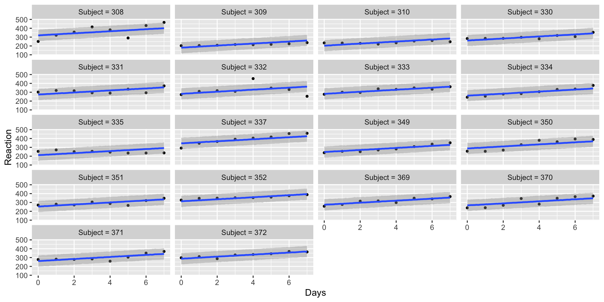
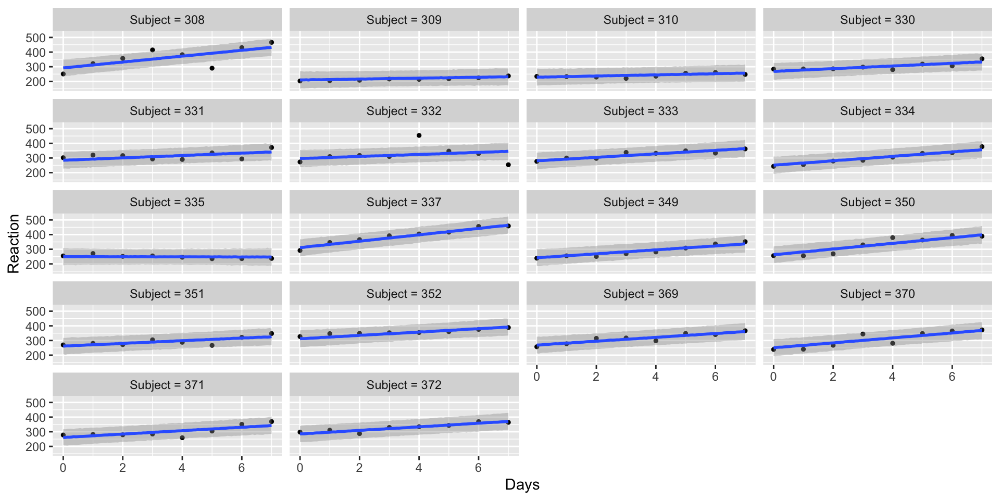

April 29, 2026
Today, we’ll work with sleep study data available in the lme4 package. This study looks at how sleep deprivation affects reaction time.
Reaction: average reaction time in milliseconds
Days: days of the study: days 0 and 1 are training, 2 is baseline, and sleep deprivation begins on day 3
Subject: indexes different individuals
We only want to study the effects of sleep deprivation, so we exclude days 0 and 1 and rescale so that Days indicates the number of sleep-deprived days:
We have data for 8 days each of 18 subjects. Notice that reaction times range from 203.0 ms to 466.4 ms.
We want to predict reaction times (\(R\)) from the number of days (\(D\)) of sleep deprivation.
\[\begin{align*} R & \sim N(\mu_i, \sigma) \\ \mu & = a_i + bD_i \\ a_i & \sim N(\bar{a}, \sigma_a) \\ b & \sim ??? \\ \bar{a} & \sim ??? \\ \sigma_a & \sim ??? \\ \sigma & \sim ??? \end{align*}\]
Now we need to specify priors for \(b\), \(\bar{a}\), \(\sigma_a\), and \(\sigma\).
Remember that reaction times range from 203.0 to 466.4 on days 0-7.
\(\bar{a}\) is the average reaction time on day 0 (no sleep deprivation), so may be quicker than average
\(b\) is the predicted increase in reaction time for each additional day of sleep deprivation, likely positive
\(\sigma_a\) is the standard deviation of individual reaction times
\(\sigma\) is the standard deviation of residuals
prior class coef group resp dpar nlpar lb ub
(flat) b
(flat) b Days
student_t(3, 303.2, 65.5) Intercept
student_t(3, 0, 65.5) sd 0
student_t(3, 0, 65.5) sd Subject 0
student_t(3, 0, 65.5) sd Intercept Subject 0
student_t(3, 0, 65.5) sigma 0
tag source
default
(vectorized)
default
default
(vectorized)
(vectorized)
defaultI think that predictions are a little bit lower than I would like. To adjust, I will increase my prior on the intercept \(\bar{a}\) to \(N(280, 20)\).
As a class, let’s interpret (a) model convergence, (b) the interpretation of each parameter.
Family: gaussian
Links: mu = identity
Formula: Reaction ~ Days + (1 | Subject)
Data: sleepstudy (Number of observations: 144)
Draws: 4 chains, each with iter = 2000; warmup = 1000; thin = 1;
total post-warmup draws = 4000
Multilevel Hyperparameters:
~Subject (Number of levels: 18)
Estimate Est.Error l-95% CI u-95% CI Rhat Bulk_ESS Tail_ESS
sd(Intercept) 42.03 7.66 29.62 59.49 1.00 799 1183
Regression Coefficients:
Estimate Est.Error l-95% CI u-95% CI Rhat Bulk_ESS Tail_ESS
Intercept 261.63 10.25 240.50 280.96 1.00 816 1227
Days 11.56 1.11 9.31 13.72 1.00 5027 2966
Further Distributional Parameters:
Estimate Est.Error l-95% CI u-95% CI Rhat Bulk_ESS Tail_ESS
sigma 30.15 1.92 26.70 34.21 1.00 3423 2885
Draws were sampled using sampling(NUTS). For each parameter, Bulk_ESS
and Tail_ESS are effective sample size measures, and Rhat is the potential
scale reduction factor on split chains (at convergence, Rhat = 1).We can plot the cluster-specific slopes by setting re_formula = NULL.
The plot is shown on the next slide so that we can see it better.
Notice that all slopes are parallel to each other but that the intercepts are adjusted to the individual.

What if we wanted not only the intercept but the slope to vary across subjects?
\[\begin{align*} R & \sim N(\mu_i, \sigma) \\ \mu & = a_i + b_iD_i \\ a_i & \sim N(\bar{a}, \sigma_a) \\ b_i & \sim N(\bar{b}, \sigma_b) \\ \begin{bmatrix}a_i \\ b_i\end{bmatrix} & \sim MVN\left(\begin{bmatrix} \bar{a} \\ \bar{b} \end{bmatrix},\pmb{S}\right) \\ \bar{a} & \sim ??? \\ \bar{b} & \sim ??? \\ \pmb{S} & \sim ??? \\ \end{align*}\]
Through the Cholesky decomposition, the covariance matrix \(\pmb{S}\) can be used such that we need to specify priors on \(\sigma_a\), \(\sigma_b\), and \(r_{ab}\).
We can use the same priors as before on \(\bar{a}\), \(\sigma_a\), \(\sigma\)
We can use the same prior on \(\bar{b}\) as we previously used on \(b\)
Need a prior on \(\sigma_b\), the standard deviation of slopes: try \(Exponential(.1)\)
Need a prior on \(r_{ab}\), the correlation between varying slopes and intercepts: try \(LKJ(1)\)
prior class coef group resp dpar nlpar lb ub
(flat) b
(flat) b Days
lkj(1) cor
lkj(1) cor Subject
student_t(3, 303.2, 65.5) Intercept
student_t(3, 0, 65.5) sd 0
student_t(3, 0, 65.5) sd Subject 0
student_t(3, 0, 65.5) sd Days Subject 0
student_t(3, 0, 65.5) sd Intercept Subject 0
student_t(3, 0, 65.5) sigma 0
tag source
default
(vectorized)
default
(vectorized)
default
default
(vectorized)
(vectorized)
(vectorized)
defaultvs_pps <- brm(Reaction ~ Days + (Days | Subject), sleepstudy,
family = gaussian(link = "identity"),
prior = prior("normal(20, 10)", class = "b") +
prior("normal(280, 20)", class = "Intercept") +
prior("exponential(.05)", class = "sd", coef = "Intercept", group = "Subject") +
prior("exponential(.1)", class = "sd", coef = "Days", group = "Subject") +
prior("exponential(.1)", class = "sigma") +
prior("lkj(1)", class = "cor"),
sample_prior = "only")These are quite similar to the varying slope predictions. This should make some sense. The major change that we made was to allow indiviudals to have their own slopes rather than a big change in what the slope actually would be.
vs_mod <- brm(Reaction ~ Days + (Days | Subject), sleepstudy,
family = gaussian(link = "identity"),
prior = prior("normal(20, 10)", class = "b") +
prior("normal(280, 20)", class = "Intercept") +
prior("exponential(.05)", class = "sd", coef = "Intercept", group = "Subject") +
prior("exponential(.1)", class = "sd", coef = "Days", group = "Subject") +
prior("exponential(.1)", class = "sigma") +
prior("lkj(1)", class = "cor"))Again, let’s interpret (a) model convergence, (b) the interpretation of each parameter.
Family: gaussian
Links: mu = identity
Formula: Reaction ~ Days + (Days | Subject)
Data: sleepstudy (Number of observations: 144)
Draws: 4 chains, each with iter = 2000; warmup = 1000; thin = 1;
total post-warmup draws = 4000
Multilevel Hyperparameters:
~Subject (Number of levels: 18)
Estimate Est.Error l-95% CI u-95% CI Rhat Bulk_ESS Tail_ESS
sd(Intercept) 31.50 7.19 19.60 47.69 1.00 2019 2805
sd(Days) 7.18 1.75 4.30 11.09 1.00 1439 2039
cor(Intercept,Days) 0.21 0.31 -0.38 0.81 1.00 1245 1118
Regression Coefficients:
Estimate Est.Error l-95% CI u-95% CI Rhat Bulk_ESS Tail_ESS
Intercept 264.18 7.91 247.89 279.31 1.00 1783 2592
Days 11.09 1.89 7.24 14.98 1.00 1963 2167
Further Distributional Parameters:
Estimate Est.Error l-95% CI u-95% CI Rhat Bulk_ESS Tail_ESS
sigma 25.75 1.81 22.50 29.68 1.00 2926 2924
Draws were sampled using sampling(NUTS). For each parameter, Bulk_ESS
and Tail_ESS are effective sample size measures, and Rhat is the potential
scale reduction factor on split chains (at convergence, Rhat = 1).Again this figure is shown on the next slide for clarity.
What do you notice about the individual slopes?

In this lab, we treated Day as a continuous variable, but there may be nonlinear or inconsistent effects of time. Using the techniques we learned about in the 2nd GLM lecture/lab, specify Days as an ordered categorical variable. We will now specify varying slopes on that ordered categorical variable.
Conduct prior predictive simulation to select appropriate priors.
Fit the model and evaluate convergence.
Plot your results. Do you find that any particular day leads to particularly high increases in reaction time? Do reaction times “level out” after a certain number of deprivation days?
Compare the fit of this model to the two models that we fit during lab, paying attention to any warnings that you find. Interpret the fit results.